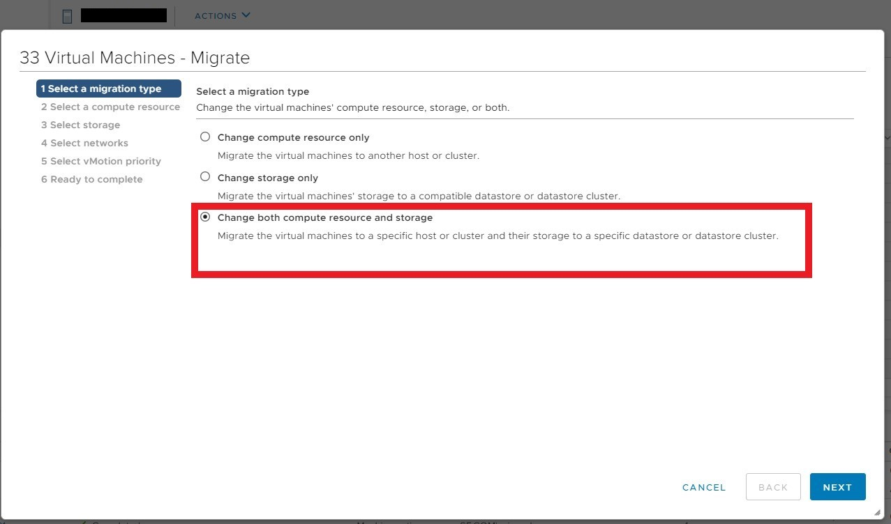

升級 ESXi 6.5.0 -> 6.7.0 Upgrading ESXi From 6.5.0 to 6.7.0
Contents
Before Upgrading
此篇為這次針對 DCX 升級 ESXi 的安裝紀錄。新上了 4 台 Dell R630 暫時緩解 DCX 資源吃緊的情況。
使用 vMotion (VMware Live Migration 技術) 動態轉移將 VM 移至其他 ESXi Host，就可以關機 維護/升級 啦~
事前準備:
- 在設備段 Windows 主機一台。方便利用 iDrac Console 進行升級
- VMware-VMvisor-Installer-6.7.0.update03-15160138.x86_64-DellEMC_Customized-A04.iso。
此為 Dell EMC 針對 ESXi 做的最佳化 iso 安裝映像檔，裡面包含 Dell Server 的驅動。
相較於直接使用 VMware 官方提供的 iso 省去了安裝 driver 的步驟，還有穩定性 Dell 也會先行測試才釋出
快速筆記
- 利用 vMotion 將目標 ESXi 主機 PowerOn 機器移轉到其他機器，這次可以搬移到新上機的
x.x.x.x~y(我挑 x) - 通知 NOC 同仁 ESXi Host 要升級 6.7 版本，將會離線、ping 不到
- vSphere Client 將目標 ESXi 主機切換成維護模式 (Maintenance Mode)
- 利用該網段 Windows 10 主機開啟瀏覽器登入 iDrac， 使用 Java 開啟 Console
- 掛載 iso (Virtual Media)， 並且設定下次開機引導到 iso
- Reboot ESXi Host (F12 and F11)
- VMware ESXi 6.7.0 Installer 設定
- vSphere Client 離開 Maintenance Mode 並檢查 vSwitch Uplink 網卡 (vmnic) 是否安好
- 搬移回去
- 告知 NOC 同仁機器已回復
vMotion
從目標 ESXi Host 將 VM 移出。
▲ 全選 PowerOn 的 VM
▲ 警告使用針對多個目標做轉移

▲ 選擇轉移計算資源與儲存資源
▲ 轉移到哪台 ESXi Host 上
▲ 選擇精簡部建 (Thin Provison) 20221226 整理更新: 應該要選擇 same from source 與來源維持一致
▲ VMware 會幫我們確認網路是否都能對應上
▲ 選擇高優先轉移。不過也會吃比較多的 CPU 資源
▲ 最後確認
確認所有 PowerOn VM 都轉移過去 + 組長電話沒有響 就可以把目標主機掛 Maintenance Mode 囉!
掛完要同步通知 NOC 機器即將關機 維護/更新
iDrac Console
利用該網段 Windows 10 主機開啟瀏覽器登入 iDrac，使用 Java 開啟 Console。
會使用 Java 開啟而非 HTML 5 的原因是 HTML 5 版本 沒有下次引導的功能 ，在使用上較為不便
不過聽 Ryzen 說新版 iDrac HTML 5 也有下次引導的功能，就不用額外下載檔案囉!
▲ 連接虛擬介質 (我猜 Virtual Media)
▲ 映射 CD/DVD (Mapping CD/DVD)
▲ 選擇 iso file
▲ 確認 iso 有成功掛載
▲ 下次引導設定成虛擬 CD/DVD/ISO
▲ 下次引導設定成虛擬 CD/DVD/ISO (確認)
▲ Reboot ESXi
▲ 可以看到 “IPMI:Boot to Virtual CD Requested” 字樣
▲ 開始透過網路載入 iso，速度取決於網路頻寬 (iDrac 實體 port 通常是瓶頸)
ESXi Installation
▲ 進入 ESXi 6.7.0 安裝引導精靈
▲ 同意 EULA。賣身契 哪次不同意!
▲ 掃描可以被安裝的裝置
▲ 選擇 Daul SD Card
第一張是 RAID 卡，按下去會變成全新安裝 (而且極有可能洗掉 port group , PowerOff VM 等)
ESXi 屬於會將整個 OS 載入 RAM 的類型。 ESXi is completely stored in memory on boot
理論上開機後拔掉 boot device 也不會造成影響~ 所以通常會灌在 SD Card 內，而且會有兩張做 Mirror
在 Jan 2021. Dell R630 上機紀錄#Integrated Device 可以看到相關設定
覺得很神奇嗎? 請參考朝陽資管朝貴老師的 豪邁帥氣裸奔!
▲ 掃描 Dual SD Card 是否已存在舊版 ESXi
▲ 掃描到舊版，詢問要升級還是安裝。選擇升級
▲ 按下 F11 確認 Upgrade
▲ 安裝中
▲ 確認下次引導已復歸，即可按下 Enter Reboot
Author 老柯
LastMod 2022-12-26 (d816c29)